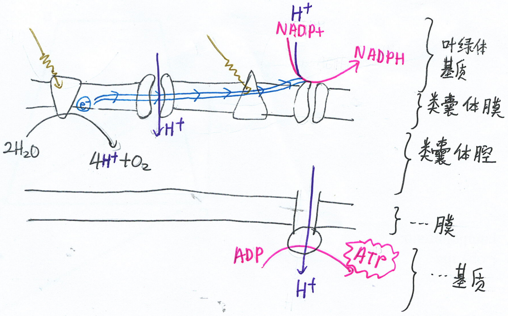
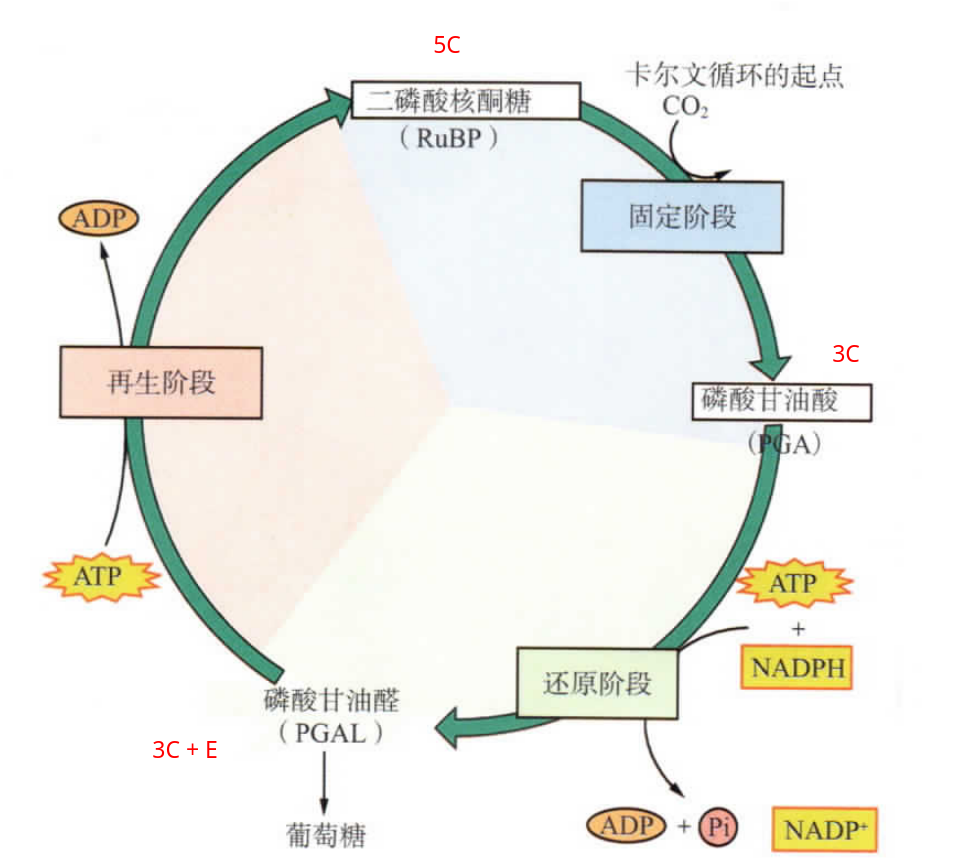

光合作用
光合作用
光合作用分
光反应
和
暗反应
。
看影片
。
光反应

光反应
光反应: 光能转化为化学能。
水 → 氧气, NADP+ → NADPH, ADP → ATP。
暗反应

暗反应/卡尔文循环
1. 二氧化碳固定
CO2 进入叶绿体基质，酶催化，CO2 + RuBP → 2PGA。
2. 三碳化合物的还原
PGA → PGAL (利用 ATP, NADPH)。
3. RuBP 的再生
小部分 PGAL 转换成葡萄糖
PGAL → RuBP (利用 ATP)。
影片